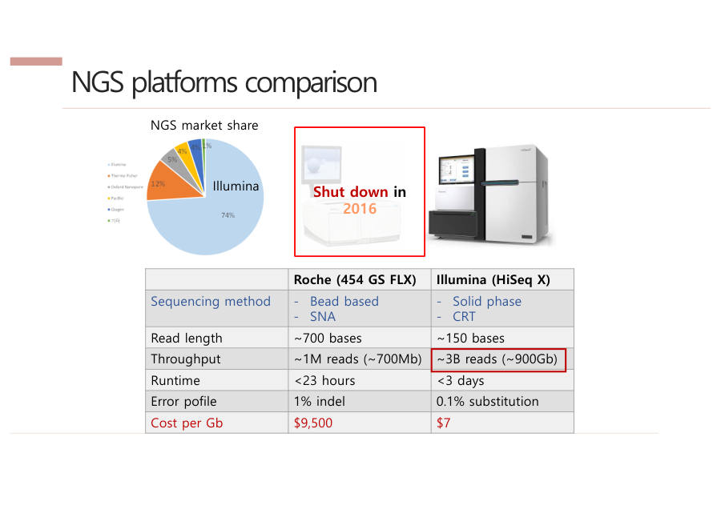
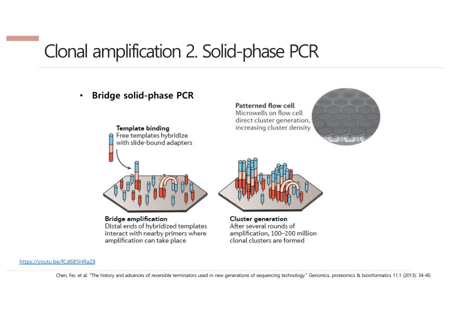

NGS — 수억 조각을 동시에 읽는 기계
교수님이 시험 예시로 직접 말한 "NGS가 뭔가"가 바로 이 장이에요. NGS가 무엇인지, 옛날 방법과 무엇이 다른지, 왜 Illumina가 이겼는지를 배워요.
3-1. 시퀀싱이란, 그리고 왜 원리를 배우나
교수님은 이 장을 "어디 가서 배우기 힘든 내용"이라고 했어요. 데이터가 어떻게 만들어지는지 알아야 분석이 쉽기 때문이에요.
이상한 값이 나왔을 때 "왜 이러지" 하고 멈추지 않고, "만들어진 원리상 이건 기계 오류겠구나" 하고 판단할 수 있어요. 그래서 시험에도 원리가 나와요.
시퀀싱은 책의 글자를 한 글자씩 읽어 노트에 옮겨 적는 일과 같아요. 그런데 책이 30억 글자라서, 어떻게 빨리 읽느냐가 핵심 문제예요.
DNA 시퀀싱은 DNA를 구성하는 염기(A, T, G, C)의 서열을 읽어 내는 기술이다. 사람 게놈은 약 30억 염기쌍이며, 데이터가 생성되는 원리를 알아야 분석 결과의 오류를 판단할 수 있다.
잠깐 확인 — 시퀀싱이란 한 문장으로 무엇인가요?
DNA의 A·T·G·C 글자 순서를 읽는 것이에요.
3-2. NGS의 정의 — 이 문장을 외우세요
NGS(Next Generation Sequencing, 차세대 염기서열 분석)는 DNA 조각들을 유리판 위에 먼저 고정해 놓고, 글자를 하나씩 붙이면서(합성) 동시에 형광 사진을 찍어(Sequencing by Synthesis, SBS) 수억~수십억 개 조각을 한꺼번에(병렬로) 읽는 기술이에요. 그 덕분에 비용이 확 떨어졌어요.
문장이 길어서 조각으로 나눠 볼게요. 핵심 단어는 네 개예요.
- 유리판에 고정 — 조각을 판 위에 먼저 박아 둬요.
- 합성(synthesis)하며 사진 — 글자를 하나씩 붙이는 동안 빛을 사진으로 찍어요.
- 병렬(parallel) — 수억 조각을 동시에 읽어요. 줄을 서서 한 명씩 읽는 게 아니라 모두 한꺼번에 읽는 거예요.
- 비용 하락 — 한꺼번에 많이 읽으니 한 조각당 값이 크게 내려가요.
"고정 → 합성하며 사진 → 동시에 수억 개 → 싸졌다" 네 마디로 외우면 문장이 풀려요.
NGS(Next Generation Sequencing)는 유리 기판 위에 DNA 클러스터를 먼저 고정하고, 염기를 하나씩 합성하면서 동시에 형광을 이미징하는 SBS 방식으로 수억~수십억 개의 DNA 조각을 병렬로 읽는 기술이다. 이로 인해 시퀀싱 비용이 크게 감소하였다.
잠깐 확인 — NGS에서 "병렬"이란 무슨 뜻인가요?
수억 개의 조각을 한 번에 동시에 읽는다는 뜻이에요.
3-3. 옛날 방식(Sanger)과 NGS의 차이
NGS 이전에 쓰던 방법은 Sanger(생어) 시퀀싱이에요. 먼저 Sanger가 어떻게 읽는지 쉬운 말로 볼게요. 세 단계예요.
- 증폭(Amplification) — 읽을 DNA를 PCR(Polymerase Chain Reaction)로 많이 복사해요. PCR은 DNA용 복사기예요.
- 늘리기(Extension) — 글자를 붙여 DNA를 늘려요. 형광이 달린 글자가 붙는 순간 멈춰서, 길이가 제각각인 조각이 많이 생겨요.
- 읽기(Detection) — 가는 관(캐필러리)에 흘리면 짧은 조각이 먼저 지나가요. 끝 글자의 형광 색을 순서대로 읽으면 서열이 나와요.
한 관에는 DNA 한 종류만 읽을 수 있어서 동시에 많이 읽기 어려워요. 관이 20개면 동시에 20종류가 한계예요.
Sanger는 한 사람이 책을 한 줄씩 베껴 쓰는 것과 같아요. 관 하나에 한 종류만이라 동시에 약 20개예요.
NGS는 책을 잘게 찢어 운동장에 수억 장 깔아 놓고, 드론이 위에서 한 글자씩 동시에 사진을 찍는 것과 같아요. 동시에 약 10억(10⁹)개예요.
| Sanger | NGS | |
|---|---|---|
| 순서 | 늘리기(Extend) → 관에 정렬(Arrange) → 읽기(Detect) | 먼저 판에 고정(Arrange) → 늘리기와 읽기를 동시에 |
| 한 칸 크기 | 관 지름 약 1cm | 점 하나 약 7μm |
| 동시에 | 관 1개당 1종류 (약 20개) | 판 하나에 약 10⁹개 |
크기 차이도 놀라워요. 1cm는 10,000μm(마이크로미터)라서, 한 칸이 1,000배 넘게 작아요. 작으니까 한 판에 수억 개를 깔 수 있는 거예요.
참고로 교수님이 말로는 점 크기를 약 1μm라고도 했지만, 슬라이드 숫자인 7μm로 외우세요.
NGS가 Sanger와 다른 핵심은 순서를 바꾼 것이에요. 다 만들어서 흘려보내는 대신, 판에 먼저 박아 놓고(Arrange) 그 자리에서 늘리면서(Extend) 동시에 사진(Detect)을 찍어요.

Sanger는 증폭, extension, 캐필러리를 통한 detection 순으로 진행되며 관 하나당 한 종류의 DNA만 읽어 병렬화가 어렵다. NGS는 기판에 DNA를 먼저 고정(arrangement)한 뒤 extension과 detection을 동시에 수행하며, 스팟이 μm 단위로 작아 약 10⁹개를 동시에 분석한다.
잠깐 확인 — Sanger는 왜 많은 DNA를 한꺼번에 읽기 어려운가요?
관 하나에 DNA 한 종류만 넣어 읽을 수 있고, 관의 크기도 약 1cm로 커서 많이 늘어놓을 수 없기 때문이에요.
3-4. 비용이 얼마나 떨어졌나
사람 게놈 하나를 처음 읽은 일이 휴먼 게놈 프로젝트(Human Genome Project, HGP)예요. Sanger 방식으로 1990년에 시작해 2003년에 끝났고, 13년과 30억 달러가 들었어요.
지금은 NGS로 한 사람의 게놈을 약 200달러에 읽어요. 30억 달러가 200달러가 됐으니 값이 약 1,500만 분의 1로 떨어진 거예요.
나라 예산을 써서 13년 걸리던 일을, 이제는 개인이 몇십만 원 정도로 맡길 수 있게 된 거예요. 그래서 개인 맞춤형 분석이 가능해졌어요.
2007년쯤부터 게놈 하나를 읽는 비용이 컴퓨터 칩 발전 속도(무어의 법칙)보다 훨씬 가파르게 떨어졌어요. 교수님은 "스마트폰 발전보다 빠르다"고 표현했어요. 이 급락을 만든 기술이 Sanger에서 NGS로의 전환이에요.
| 연도 | 사건 |
|---|---|
| 1977 | Sanger 시퀀싱 등장 |
| 1990 | 휴먼 게놈 프로젝트 시작 |
| 2003 | 휴먼 게놈 프로젝트 완료 (13년, 30억 달러) |
| 2005 | 시장 최초의 NGS 장비 GS20 (454 Life Sciences) |
| 2007경 | NGS가 본격적으로 활발해짐, 여러 회사가 경쟁 |
※ 녹취에서 "3조"라고 말한 부분이 있는데 말실수예요. 강의 자료 기준 30억 달러가 맞아요.
휴먼 게놈 프로젝트는 1990년부터 2003년까지 13년간 약 30억 달러를 들여 Sanger 방식으로 수행되었다. NGS의 등장으로 현재는 개인 게놈을 약 200달러 수준에 분석할 수 있다.
잠깐 확인 — 휴먼 게놈 프로젝트의 기간과 비용은 얼마인가요?
1990~2003년, 13년 동안 30억 달러가 들었어요(지금은 약 200달러).
3-5. NGS가 읽는 원리 — SBS (Sequencing by Synthesis)
SBS는 "합성하면서 읽는다"는 뜻이에요. 두 단계로 기억하세요.
첫째, 클론 증폭(Clonal amplification)이에요. DNA 한 가닥이 내는 빛은 너무 약해서 사진에 안 잡혀요. 그래서 같은 조각을 약 1,000개로 복사해 한 점에 모아 빛을 키워요. 이 한 점을 클러스터(cluster)라고 해요.
혼자 손전등을 켜면 멀리서 안 보여요. 그래서 같은 반 친구 1,000명이 한곳에 모여 동시에 켜는 거예요.
둘째, 글자 붙이며 감지(Sensing)예요. 한 사이클(한 바퀴)마다 글자 하나를 붙이고 형광 사진을 한 장 찍어요. 글자마다 빛 색이 달라서 색을 보면 무슨 글자인지 알아요. 이 바퀴를 약 150번 돌려요.
같은 점의 색을 사진마다 이어서 읽으면 그 조각의 글자 순서가 나와요. 아래 표에서 점 ①은 1회 A, 2회 C, 3회 G, 4회 T라서 ACGT…로 읽혀요.
사이클마다 사진 한 장 → 같은 점의 색을 이어 읽으면 서열
| 1회 | 2회 | 3회 | 4회 | 읽은 결과 | ||
| 점 ① | A | C | G | T | ACGT… | |
| 점 ② | G | G | A | C | GGAC… | |
| 점 ③ | T | A | A | G | TAAG… |
글자마다 형광 색이 달라서 사진 색으로 글자를 알아요 (색은 설명용)
운동장의 수억 개 전구가 한 번 켜질 때마다 색이 달라요. 드론이 매번 사진을 찍어 두면, 전구마다 "빨강, 초록, 파랑…" 하는 색 순서가 곧 그 조각의 글자 순서예요.
왜 150번쯤에서 멈출까요. 사이클을 반복할수록 먼지나 형광 물질이 끼어 점이 지저분해지고, 색을 헷갈리는 잡음이 쌓이기 때문이에요. 그래서 한 번에 읽는 길이가 짧아요.

SBS는 두 단계로 이루어진다. 먼저 클론 증폭으로 같은 DNA 약 1,000개를 한 클러스터에 모아 형광 신호를 키운다. 이후 사이클마다 염기 하나를 합성하며 형광을 이미징하고, 이를 약 150회 반복해 각 클러스터의 염기서열을 얻는다.
잠깐 확인 — 같은 조각을 약 1,000개로 복사해 한 점에 모으는 이유는 무엇인가요?
DNA 한 가닥의 형광은 너무 약해서, 같은 조각을 모아 신호를 키워야 사진에 잡히기 때문이에요.
3-6. 용어 두 개 — read length와 throughput
Read(리드)는 기계가 한 번에 읽은 조각 하나예요. Read length는 그 조각의 길이이고, Illumina는 약 150, Roche는 약 700이에요.
Throughput(처리량)은 한 번 돌릴 때 읽는 DNA의 총량이에요. 판 위에 박아 둔 점이 많을수록 커요.
read length는 한 번에 외우는 문장의 길이이고, throughput은 하루에 외우는 문장의 총 개수예요. 문장이 짧아도 훨씬 많이 외우는 사람이 총량으로는 이겨요.
read length는 한 번에 읽는 염기서열의 길이이고, throughput은 한 번의 실행에서 생산하는 총 염기서열 양이다. Illumina는 read length가 약 150으로 짧지만 throughput이 매우 크다.
잠깐 확인 — Illumina는 read length와 throughput 중 어느 쪽이 강점인가요?
throughput(처리량)이에요. 짧게 읽는 대신 아주 많이 읽어요.
3-7. Roche vs Illumina — 왜 Illumina가 이겼나
NGS 초기에는 여러 회사가 경쟁했어요. 그중 처음 시장에 나온 Roche(454)와 지금 시장을 차지한 Illumina를 비교해요. 두 회사의 차이는 "복사하는 방법"과 "읽는 방법"이에요.
| Roche (454) | Illumina | |
|---|---|---|
| 복사 방법 | Emulsion PCR 기름 속 물방울 안 구슬에서 복사 | Bridge PCR 유리판 위에서 다리처럼 휘어 복사 |
| 읽는 방법 | SNA 글자를 한 종류씩 흘려보내고 빛 ON/OFF | CRT 4글자에 다른 색 붙여 한 번에 흘리고, 찍고, 색 잘라내고 반복 |
| 한 번에 읽는 길이 | ~700 (더 김) | ~150 |
| 에러 | 1% | 0.1% |
| 처리량 | ~100만 reads | ~30억 reads |
| 1Gb당 비용 | $9,500 | $7 |
복사 방법부터 볼게요. 복사본이 서로 섞이면 색이 뒤엉켜 읽을 수 없으니 점끼리 분리하는 게 중요해요. Roche는 기름 속 물방울 하나에 구슬 하나와 DNA 하나를 넣어 복사하고(Emulsion PCR), Illumina는 유리판에서 DNA가 다리(bridge)처럼 휘어 가까운 곳에서만 복사해요(Bridge PCR).
기름 방울 = Emulsion(Roche), 다리 = Bridge(Illumina)로 연결하세요.
읽는 방법도 달라요. SNA(Single Nucleotide Addition)는 A만, 다음엔 T만 하는 식으로 글자를 한 종류씩 흘려보내고 빛이 켜지는지만 봐요. CRT(Cyclic Reversible Termination)는 4글자에 서로 다른 색을 달아 한 번에 흘리고, 사진을 찍은 뒤 색을 잘라 내고 다음 바퀴를 돌려요.
교수님은 두 이름까지 외울 필요는 없고 원리만 알면 된다고 했어요. "한 종류씩 흘려 빛을 본다"와 "한꺼번에 흘리고 색으로 구분한다"를 구별하면 돼요. 참고로 Roche의 주된 에러는 글자가 빠지거나 끼는 삽입·결실(indel)이고, Illumina는 글자가 바뀌는 치환(substitution)이에요.
Roche(454)는 Emulsion PCR로 클론을 만들고 SNA 방식으로 염기별 빛의 ON/OFF를 검출한다. Illumina는 flow cell에서 Bridge PCR로 클러스터를 만들고, 서로 다른 형광을 단 4종 염기를 CRT 방식으로 붙여 이미징한 뒤 형광을 절단하는 과정을 약 150회 반복한다.
잠깐 확인 — Emulsion PCR과 Bridge PCR 중 유리판 위에서 하는 것은 어느 쪽인가요?
Bridge PCR(Illumina)이에요. Emulsion PCR(Roche)은 기름 속 물방울 안에서 해요.
3-8. 승부를 가른 것은 비용
표를 보면 읽는 길이와 속도는 Roche가 더 좋아요. 그런데도 Illumina가 이긴 이유가 시험 단골 질문이에요.
정답은 비용이에요. 처리량이 약 100만 reads 대 30억 reads로 압도적으로 커서, 1Gb(기가베이스, 글자 10억 개)당 값이 Roche는 $9,500, Illumina는 $7로 1,000배 이상 차이가 났어요.
교수님 논리는 이래요. 연구자는 국가 연구비로 연구하니까, 시퀀싱이 1,000만 원이냐 100만 원이냐 앞에서는 3일이 걸리고 150글자밖에 못 읽어도 100만 원짜리를 골라요. 에러가 적은 것도 좋은 점이지만 핵심은 아니었어요.
그 결과 Roche는 2016년에 문을 닫았고, Illumina는 시장 점유율 약 70%를 차지해요. 교수님의 결론은 한 문장이에요.
"기술 혁신은 결국 비용과 연결된다." Illumina는 매년 새 기기를 내며 처리량을 올리고 가격을 낮춰요.



Illumina가 시장을 차지한 가장 큰 이유는 비용이다. Roche(454)는 read length(약 700 대 150)가 길었지만, Illumina는 처리량이 약 3B reads로 압도적이어서 Cost per Gb가 $7로 Roche의 $9,500보다 1,000배 이상 낮았다. Roche는 2016년 문을 닫았고, 이는 기술 혁신이 비용과 연결됨을 보여 준다.
잠깐 확인 — Roche가 읽는 길이는 더 길었는데 왜 졌나요?
Illumina가 한 번에 훨씬 많이 읽어서 1Gb당 값이 $7로 Roche($9,500)보다 1,000배 이상 쌌기 때문이에요.
- NGS는 DNA 조각을 판에 고정해 놓고 글자를 붙이며 동시에 사진을 찍어(SBS) 수억 개를 한꺼번에 읽는 기술이에요.
- Sanger는 관 하나에 한 종류(약 20개)였고, NGS는 약 10⁹개를 동시에 읽어 게놈 비용이 30억 달러에서 약 200달러로 떨어졌어요.
- Illumina(Bridge PCR, CRT)가 Roche(Emulsion PCR, SNA)를 이긴 이유는 비용($7 대 $9,500)이고, 결론은 "기술 혁신은 비용과 연결된다"예요.